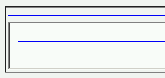
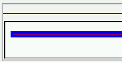

水平線（hr要素）にheightプロパティを指定したとき、標準モードと互換モードとで高さが変わる。具体的には、標準モードでより細い線になる。
<hr style="height: 1px; border: 5px solid blue; background: red;">
インラインフレーム内に表示されている水平線は、互換モードで表示されています。
WinIE6.0での表示
N6.2.3での表示
標準モードと互換モードとではhr要素のボーダー幅に対する扱いが異なっています。互換モードでは指定された幅のボーダーをレンダリングする（div要素などと同じ方法）のに対し、標準モードでは全体の高さがheightプロパティで指定された値になるように、ボーダーの幅が強制的に狭められています。おそらく、Mozillaの仕様上の差でしょう。
N6.2.3およびMoz1.0のいずれでもレンダリングに違いが現れます。